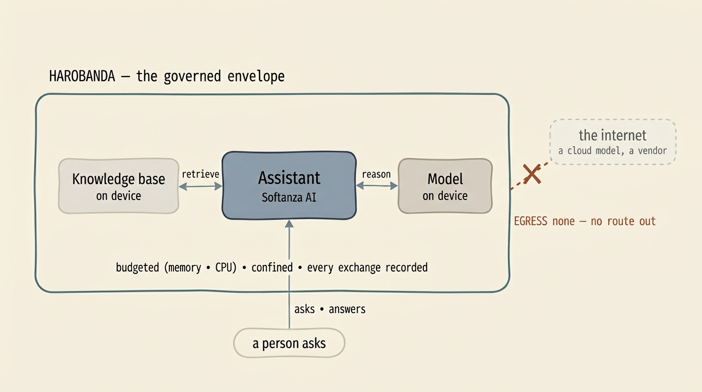

AI & agents
A foundation for governed applications — and the floor a sovereign agent needs.
The computational foundation above the machine, the intelligence layer it reaches, and why an AI agent that runs here cannot escape or abuse the box it runs on.
The full stack · one idea, at every altitude
A foundation for governed applications — in any domain.
The idea does not stop at the floor. On top of the machine sits Softanza, a computational foundation for building enterprise-strength applications in any domain — and for building AI — the same way you build the machine: declared, judged, governed. An application described this way carries its data, its rules, its identities and its permissions as declared facts, so an enterprise or a regulator can read what it is and what it does, at every level.
It reaches to the intelligence layer — knowledge, models and agents as governed capabilities, on-device where the data must stay — so an AI product is sovereign the same way the machine is. Below, one such agent, and how Harobanda keeps it in bounds.


One method, from the hardware to the intelligence layer: declare, judge, govern. Own the floor, and the whole stack above it can be sovereign too.
The capital point · agentic systems
The floor an AI agent cannot escape — or abuse.
An AI agent is a program like any other, and here it runs inside the same declared envelope as everything else. That single fact is what makes a genuinely secure, sovereign agent possible — not a guardrail bolted on after the model, but the design of the floor beneath it.
Give an agent real power inside its world, and remove every way for it to reach beyond that world. The machine does exactly that, by construction:
Only what it was granted
An agent has exactly the capabilities its declaration lists — a network only if declared, storage only where mounted, and nothing else. There is no shell to break out to, because there is no shell.
Never past its budget
Memory and processor time are held by the kernel, per program, in its own group. A runaway agent is stopped inside its own envelope; the rest of the machine never feels it.
The data cannot leave
Declare a box with no route out, and “the model runs here, the data stays here” becomes a fact the court enforces — the sovereign answer for AI on sensitive data.
It proposes; the floor disposes
Because the machine is a declared grammar, an agent can draft a change to it. The court judges the draft, a person ratifies it, the box tries it once and rolls back if wrong.
Every act is recorded
The machine keeps a signed, tamper-evident record of what it did. An agent's actions are auditable afterwards by anyone holding the public key — evidence, not logs.
It rehearses first
Risky effects are tried on a virtual twin that cannot touch the real machine; only a plan leaves the sandbox. Rehearse, then commit through the trial.
An agent proposes a change — and the floor judges it before anything happens
# 1 · the agent drafts a new service DEFINE SERVICE alerts AS ( RUN ["/app/alerts"], NEEDS [network] ) RATIONALE "watch, and warn" # 2 · the court judges the draft — and refuses it alerts needs network, which nothing grants → refused # 3 · the agent revises; a person ratifies the file + DEFINE CAPABILITY network ... (a human approves) # 4 · the box tries it once, then decides for itself boot: slot B -- a trial boot: judge -- matches boot: slot B -- committed
An example — a governed knowledge assistant
Say you want an assistant that answers questions from your own documents — the thing everyone now builds against a cloud model. With Softanza AI it is a few declarations: a knowledge base, a model, and a chat service. What Harobanda adds is the governance the cloud version cannot: the model and the index run on the box; the machine declares no route out, so the documents and the questions never leave; the assistant runs in its own envelope under a memory and CPU ceiling; and every exchange is recorded. The same assistant that would hand your data to a vendor becomes one you can place in a clinic or a ministry.
DEFINE MACHINE hub AS ( ... ) -- NETWORK lan, EGRESS none → no route to the outside DEFINE SERVICE assistant AS ( RUN ["/app/assistant"], NEEDS [filesystem, inference], -- read docs, run model; no network at all MEMORY 2048, CPU 200, -- a ceiling the kernel holds READY "/run/assistant.ready" ) RATIONALE "answers from the org's own knowledge; nothing leaves the box"


An agent that cannot reach what it was not granted, cannot exceed what it was budgeted, cannot leak what must stay, and can change the machine only through a judged, reversible, recorded proposal — is an agent you can actually deploy.
Next